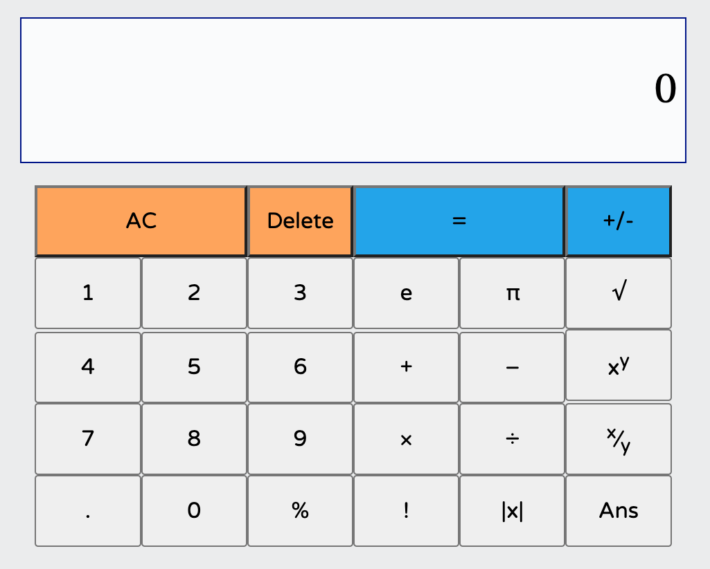
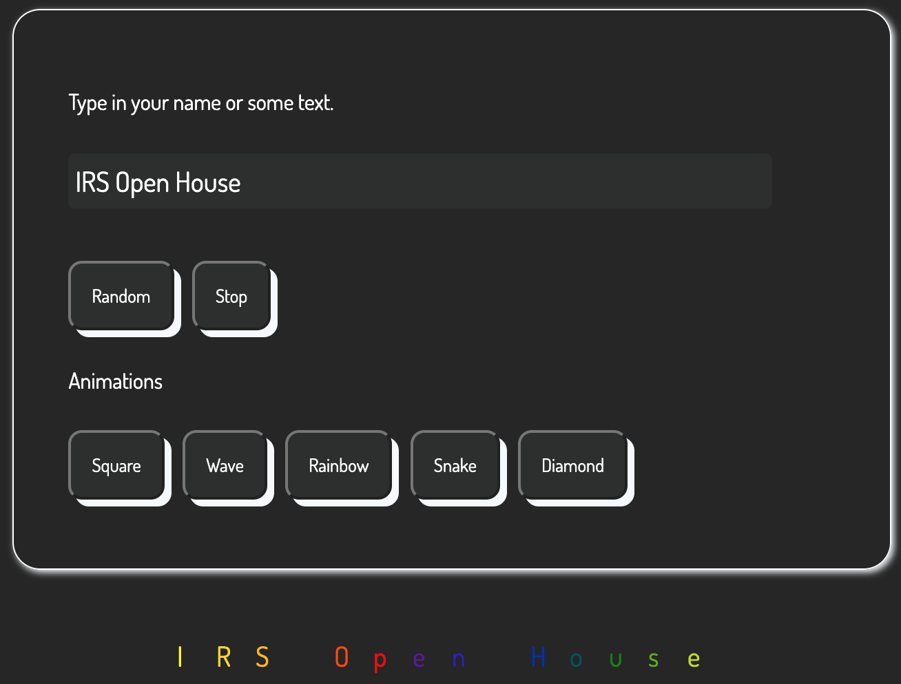
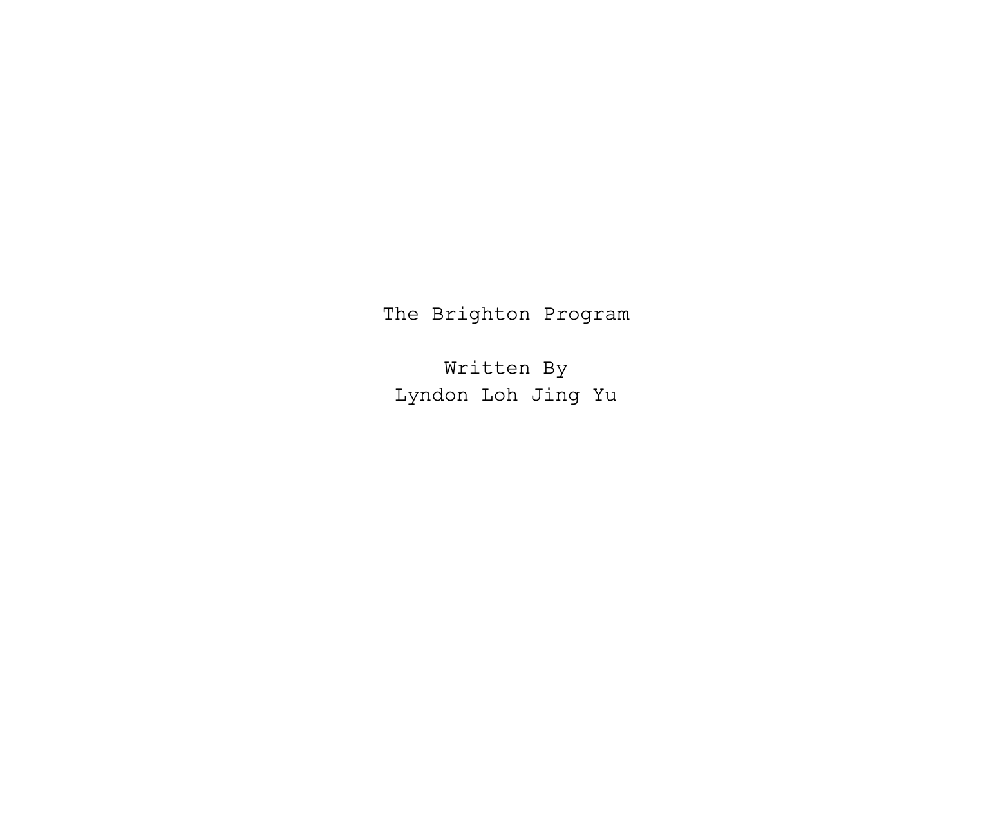

Web Development
During HBL/Whenever I am free, I have decided to practice web development by first thinking of a project and followed by working towards completing it. If I had problems, I would search online for answers or continuously try. I decided to take this passion up as I prefer creating something interactive which can be easily displayed or shared such as via a website.
Last year, I followed a website called FreeCodeCamp which guided me on making websites such as a survey.
However, this year, I decided to not follow the website's tutorials and try to make some projects myself.
Some projects I made by myself this year includes..
- Calculator (https://lohputter.github.io/calculator/) 
- Text Animation Website (https://lohputter.github.io/namer/) 
- This E-Portfolio
I hope to be able to continue pursuing this interest of mine, using more advanced programming languages and building bigger and better projects.
Story Writing
Lately, I have gained an interest in writing fictional stories and would set aside some time to plan and work on a story. I already have ideas for characters and the plot but I just need to write it out on Google Docs.
It is still a work in progress. My English is not the best in terms of vocabulary but I am still trying to at least write out something decent and continue to work hard towards it.